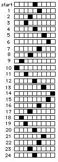

11. Patterns in games & puzzles
a. See the patterns Sheri finds with the Magic Number Cards
b. Kaitlin's 6-card "Magic Number Cards"
c. The Tower Puzzle: see Sheri's (4th grader) work.
d. The Peg Game or Shuttle Puzzle and KaitieR finds a pattern in the Peg Game . The figure below shows the pattern the HOLE makes when the pegs are moved.

To order
Don's materials
Mathman home